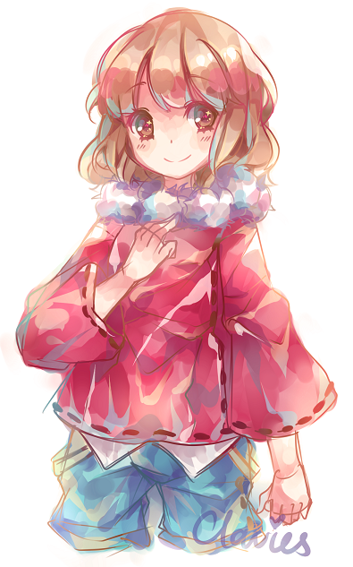
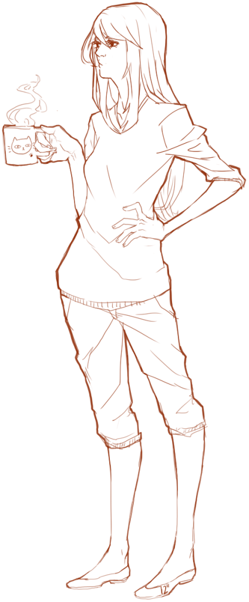

Emma
"I love you!"
Name: Emma
Age: ~19
Height: 5'3" (160 cm)
Weight: about 130lbs (59kg)
Sexual orientation: gay
Likes: fruity flavors, pop music, ice cream, and long hot baths
Dislikes: flowers (certain ones, anyway), waking up early, having to work on things she doesn't care for, and the idea of growing up into an old fuddy duddy
Emma is a light-hearted girl who doesn't like to think too hard about most things. Notably irresponsible, she tends to spend her days equally divided between lazing around and half-working, half-procrastinating.
She is an open girl who likes to (and sometimes can't help) lavishing love on those she holds close. However, that openness can sometimes be brutal when she has a harsher opinion or when she is feeling pried at. She will not hesitate to tell off someone if she feels they're overstepping their boundaries.
She grew up as an only child in a lax household with parents who were cut off for eloping in their twenties. While money was tight, her parents still managed to dote on her, and she was able to explore her likes and dislikes with the loose leash her parents kept her on. In high school, she began to question her sexuality and realized guys didn't really do much for her, and broke up with her then-boyfriend. He outed her and her life took a sharp turn -- her friends no longer wanted to be with her, and she found herself alone. She ended up turning to her social studies teacher, a twenty-something woman who empathized with her, and slowly Emma fell in love with her. However, when she expressed those feelings, her teacher gently rejected her. With those bittersweet memories fresh in her mind while she graduated and went on to college, she decided to become a teacher like the one she had loved, and decided to focus on social studies as well.
One of her strengths is how sensitive she can be to others' emotions, but she can also be overly wishful in her thinking and misconstrue what she perceives. The thing most people like about her is her warm nature.
Click image for more images!
Vera
"Too loud..."
Name: Vera
Age: ~15
Height: 5'7" (170 cm)
Weight: about 120lbs (54kg)
Sexual orientation: gay (unsure)
Likes: simplicity, honesty, coffee
Dislikes: projects, tea (not enough caffeine for her), and people who are violently pushy
Vera is a quiet girl who prefers to keep it inside rather than spilling it out for everyone to see. For the most part, she is relatively stoic as a result and gives off a mature and calm image -- however, when flustered, she becomes much more honest (although it's wholly involuntary). Emma finds that irresistible and, as a result, Vera ends up the target of much of Emma's playful teasing.
Being the oldest in a broken family, she is more down-to-earth than she needs to be and can be strict. She knows her own limits well, and knows that although she cannot do certain things, her goal is to do what she can. While admirable, that viewpoint can become problematic, as she will sometimes give up on things without trying because she believes it to be impossible for her.
Emma is her first partner, and so sometimes Vera is unsure and hesitant about what to do with her and how to approach their relationship. Due to that insecurity, she tends to treat it like she would anything else, and can be very serious about even the things that may not need to be approached as somberly as she approaches it.
Her parents divorced when she was in the second grade, although she can't remember most of it. Her mom left without much warning, and while her dad works to provide for the family, their family life has become stretched a little thin. She and her siblings are very close, however, perhaps as a result of the growing distance between them and their dad.
Vera's strengths are sometimes her weaknesses; she is hardworking and bright, and while not a genius on any level, she will give it her all if she believes herself to be capable. But, as mentioned before, her analytical approach to her abilities can result in her being cynical and closed-off.
Click image for more images!
The Two of Them
Emma + Vera

Their relationship could be described as soft and slow. Emma is the older one and is a tutor to Vera, who, despite her age, plays the role of the adult in the relationship all too often.
Emma is good at a select few things - lazing around being one of them - and so depends on Vera to take care of more of the practical life skills. In this way, they've sort of settled into a comfortable dynamic, and although Emma typically is the one getting spoiled by Vera, she is quite in tune with the people around her and balances out Vera's tendency to try to push away her own needs.
They typically are either studying together (most notably the humanities, as Vera struggles with paying attention in these subjects) or flirting wantonly. While Vera appears to worry more than Emma about the consequences of their relationship getting out - whatwith Emma wanting to become an instructor and all - and while Emma playfully laughs it off, of the two, Emma is more aware of it and takes precautions that Vera is unaware of. In at least this area, she takes up the role of the adult (though she lets Vera believe that she gives it no passing thought).
The two met at Vera's high school where Emma was working as a UTA (undergraduate teaching assistant). When she was introduced to the class, she noticed Vera almost immediately and fell head over heels for her cool and mature image. The more they talked, the closer they got, and eventually they found out they lived in the same apartment complex and began to spend increasingly more time together. Comfortable but still wanting more, Emma decided to tell Vera how she felt, thinking Vera might feel the same. However, when she confessed to Vera, Vera became unexpectedly embarrassed and panickedly thought she was joking. Not knowing what to do, Emma ended up disappearing from school for a week or so, worrying Vera, and eventually Vera found out through another teaching assistant that Emma had been locking herself up in her apartment and avoiding all calls and visitors. Vera, now extremely worried, went to her apartment and tried to coax Emma out, only to find that she had been seen leaving by a neighbor. After hearing that, Vera asked around, trying to find out where she might've gone -- and got a phone call from the teaching assistant who'd told her before about Emma. Apparently she'd been found in a bar half-asleep, and when Vera arrived, she was stubbornly stumbling out, trying to find her car to get home. Vera stopped her and explained the misunderstanding, and realized that she couldn't explain why she'd been so frantic to find her. To Emma's surprise, she asked Emma to go out with her -- "I'm not sure of my feelings, but I want to find out." And with that straightforward confession, Emma and Vera began dating.
AN: The age gap between the two is marginal. Vera is around fifteen and Emma is around nineteen. These two are my oldest ocs, and sadly quite underdeveloped considering that...